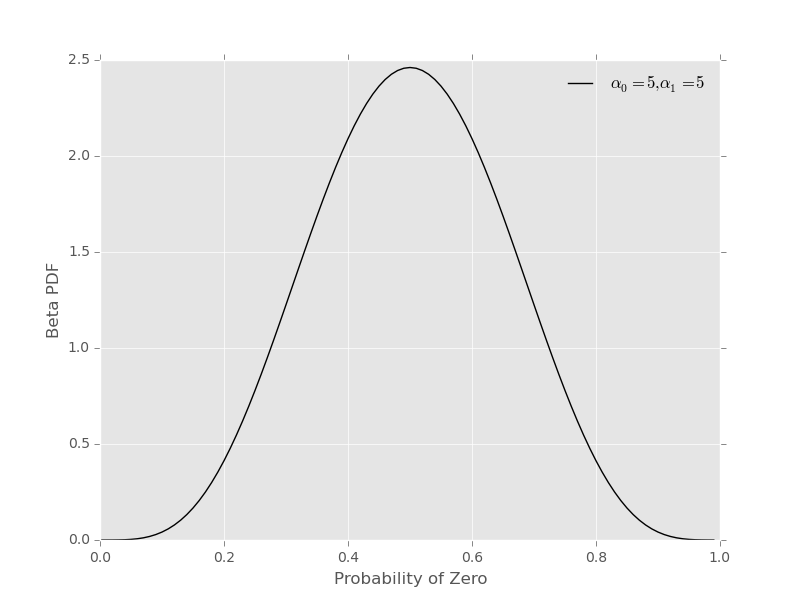

Inferring probabilities with a Beta prior, a third example of Bayesian calculations
In this post I will expand on a previous example of inferring probabilities from a data series: Inferring probabilities, a second example of Bayesian calculations. In particular, instead of considering a discrete set of candidate probabilities, I’ll consider all (continuous) values between \(0\) and \(1\). This means our prior (and posterior) will now be a probability density function (pdf) instead of a probability mass function (pmf). More specifically, I’ll use the Beta Distribution for this example.
In the post Inferring probabilities, a second example of Bayesian calculations I considered inference of \(p_{0}\), the probability for a zero, from a data series:
I’ll tackle the same question in this post using a different prior for \(p_{0}\), one that allows for continuous values between \(0\) and \(1\) instead of a discrete set of candidates. This makes the math a bit more difficult, requiring integrals instead of sums, but the basic ideas are the same.
This is one in a series of posts on Bayesian methods, starting from the basics and increasing in difficulty:
- Joint, conditional and marginal probabilities
- Medical tests, a first example of Bayesian calculations
- Inferring probabilities, a second example of Bayesian calculations
If the following is unfamiliar or difficult try consulting one or more of the above posts for some more basic, introductory material.
Likelihood
The starting point for our inference problem is the likelihood – the probability of the observed data series, written like I know the value of \(p_{0}\) (see the Inferring probabilities, a second example of Bayesian calculations post for more details, I’ll be brief here):
To be clear, we could plug in \(p_{0}=0.6\), and find the probability of the specified data series given that value for the unknown probability. A more general form for the likelihood, not being specific about the data series considered, is
where \(n_{0}\) is the number of zeros and \(n_{1}\) is the number of ones in whatever data series \(D\) is considered.
Prior – The Beta Distribution
The new material, relative to the previous post on this topic, starts here. We use the Beta Distribution to represent our prior assumptions/information. The mathematical form is:
where \(\alpha_{0}\) and \(\alpha_{1}\) are hyper-parameters that we have to set to reflect our prior assumptions/information about the value of \(p_{0}\). It is useful to understand some of the properties of the Beta Distribution, so let’s go over some:
- The pdf is normalized. This means if we integrate \(p_{0}\) from \(0\) to \(1\) we get one:
This is true because of the following relationship:
The above integral produces the Beta function (the relation is also called the Euler integral). For our purposes, the most import information is the Beta Distribution is normalized on the \(0\) to \(1\) interval, as necessary for \(p_{0}\).
Prior assumptions/information can be reflected by setting hyper-parameters. The hyper-parameters \(\alpha_{0}\) and \(\alpha_{1}\) affect the shape of the pdf, enabling a flexible encoding of prior information.
For example, no (a priori) preferred values of \(p_{0}\) can be reflected by using \(\alpha_{0}=1\), \(\alpha_{1}=1\). This pdf looks like
{kind=link}
and reflects the fact that a value of \(p_{0}\) between 0.0 and 0.2 has the same prior probability as value between 0.6 and 0.8. To find these probabilities, we’d have to integrate the Beta pdf over the appropriate range. For example, we can look at the cumulative density function

Another prior could assign \(\alpha_{0}=5\), \(\alpha_{1}=5\), which prefers values near \(p_{0}=1/2\) and looks like
{kind=link}
The CDS for this prior looks different:

- The Beta Distribution is a conjugate prior for this problem. This means that the posterior will have the same mathematical form as the prior (it will also be a Beta Distribution) with updated hyper-parameters. This mathematical ‘resonance’ is really nice and let’s us do full Bayesian inference without MCMC.
Some final notes before moving on to Bayes’ Theorem and the posterior for this problem:
- I’ve used different notation for the Beta: \((\alpha_{0}, \alpha_{1})\) instead of the usual \((\alpha, \beta)\). As I’ll discuss further below, this notation makes it easier to compare the hyper-parameters with fake counts and relate the values with data \(n_{0}\) and \(n_{1}\).
- It useful to use the mean as a summary of the prior settings. For the Beta pdf, the mean is
Many other properties (higher moments, variance, etc) can be calculated– see Beta Distribution for more options. Also checkout this nice post on Probable Points and Credible Intervals for ideas on how to summarize a posterior distribution (also relevant to priors).
Bayes’ Theorem and the Posterior
Our final goal is the posterior probability density function, combining the likelihood and the prior to make an updated reflection of our knowledge of \(p_{0}\) after considering data. The posterior pdf has the form (in this case):
In words, this is the probability density for \(p_{0}\) given data series \(D\) and prior assumptions, reflected by the Beta pdf with hyper-parameters \((\alpha_{0}, \alpha_{1})\).
In this setting Bayes’ Theorem takes the form:
where the posterior \(\color{blue}{P(p_{0} \vert D, \alpha_{0}, \alpha_{1})}\) is blue, the likelihood \(P(D \vert \hat{p}_{0})\) is black, and the prior \(\color{red}{P(p_{0} \vert \alpha_{0}, \alpha_{1})}\) is red. Notice that the normalizing marginal likelihood or evidence (denominator in the above equation) is now an integral. This is the price of using continuous values for \(p_{0}\)– you should compare this with Bayes’ Theorem in the Inferring probabilities, a second example of Bayesian calculations post.
As always, try to think about Bayes’ Theorem as information about \(p_{0}\) being updated from assumptions (\(\alpha_{0}, \alpha_{1}\)) to assumptions + data (\(D, \alpha_{0}, \alpha_{1}\)):
To get the posterior pdf, we have to do the integral in the denominator of Bayes’ Theorem. In this case, the calculation is possible, using the properties of the Beta Distribution. The integral goes as follows:
The integral on the last line defines a Beta Function, as discussed in the section on the prior, and has a known result:
This means the denominator, also called the marginal likelihood or evidence, is equal to:
If we plug all of this back into Bayes’ Theorem we get another Beta Distribution for the posterior pdf, as promised above:
Again, we obtain this result because the Beta Distribution is a conjugate prior for the Bernoulli Process likelihood that we are considering. Notice that the hyper-parameters from the prior have been updated by count data
This is exactly as one might expect without doing all of the math. In any case, before moving to implementing this in Python, a couple of notes:
- The posterior pdf is normalized on the \(0\) to \(1\) interval, just as we need for inferring a probability like \(p_{0}\).
- The posterior mean, a way to give a point estimate of our inference is
Inference code in Python
Note: code available as ex003_bayes.py at github examples repository.
Let’s do some Python. First, we do some import of packages that we will use to calculate and plot prior, likelihood and posterior. Notice that scipy.stats has a beta class that we will use for the prior and posterior pdfs. Also, we use matplotlib and the new styles, ggplot in this case, to create some nice plots with minimal tweaking.
from __future__ import division, print_function
import numpy as np
import matplotlib.pyplot as plt
from scipy.stats import beta
# use matplotlib style sheet
try:
plt.style.use('ggplot')
except:
# version of matplotlib might not be recent
pass
Likelihood
The likelihood is exactly the same as for the previous example– see Inferring probabilities, a second example of Bayesian calculations.
class likelihood:
def __init__(self, data):
"""Likelihood for binary data."""
self.counts = {s:0 for s in ['0', '1']}
self._process_data(data)
def _process_data(self, data):
"""Process data."""
temp = [str(x) for x in data]
for s in ['0', '1']:
self.counts[s] = temp.count(s)
if len(temp) != sum(self.counts.values()):
raise Exception("Passed data is not all 0`s and 1`s!")
def _process_probabilities(self, p0):
"""Process probabilities."""
n0 = self.counts['0']
n1 = self.counts['1']
if p0 != 0 and p0 != 1:
# typical case
logpr_data = n0*np.log(p0) + \
n1*np.log(1.-p0)
pr_data = np.exp(logpr_data)
elif p0 == 0 and n0 != 0:
# p0 can't be 0 if n0 is not 0
logpr_data = -np.inf
pr_data = np.exp(logpr_data)
elif p0 == 0 and n0 == 0:
# data consistent with p0=0
logpr_data = n1*np.log(1.-p0)
pr_data = np.exp(logpr_data)
elif p0 == 1 and n1 != 0:
# p0 can't be 1 if n1 is not 0
logpr_data = -np.inf
pr_data = np.exp(logpr_data)
elif p0 == 1 and n1 == 0:
# data consistent with p0=1
logpr_data = n0*np.log(p0)
pr_data = np.exp(logpr_data)
return pr_data, logpr_data
def prob(self, p0):
"""Get probability of data."""
pr_data, _ = self._process_probabilities(p0)
return pr_data
def log_prob(self, p0):
"""Get log of probability of data."""
_, logpr_data = self._process_probabilities(p0)
return logpr_data
Prior
Our prior class will basically be a wrapper around scipy.stats.beta with a plotting method.
class prior:
def __init__(self, alpha0=1, alpha1=1):
"""Beta prior for binary data."""
self.a0 = alpha0
self.a1 = alpha1
self.p0rv = beta(self.a0, self.a1)
def interval(self, prob):
"""End points for region of pdf containing `prob` of the
pdf.
Ex: interval(0.95)
"""
return self.p0rv.interval(prob)
def mean(self):
"""Returns prior mean."""
return self.p0rv.mean()
def pdf(self, p0):
"""Probability density at p0."""
return self.p0rv.pdf(p0)
def plot(self):
"""A plot showing mean and 95% credible interval."""
fig, ax = plt.subplots(1, 1)
x = np.arange(0., 1., 0.01)
# get prior mean p0
mean = self.mean()
# get low/high pts containg 95% probability
low_p0, high_p0 = self.interval(0.95)
x_prob = np.arange(low_p0, high_p0, 0.01)
# plot pdf
ax.plot(x, self.pdf(x), 'r-')
# fill 95% region
ax.fill_between(x_prob, 0, self.pdf(x_prob),
color='red', alpha='0.2' )
# mean
ax.stem([mean], [self.pdf(mean)], linefmt='r-',
markerfmt='ro', basefmt='w-')
ax.set_xlabel('Probability of Zero')
ax.set_ylabel('Prior PDF')
ax.set_ylim(0., 1.1*np.max(self.pdf(x)))
plt.show()
Let’s plot some Beta pdfs with a range of parameters using the new code. First, the uniform prior
pri = prior(1, 1)
print("Prior mean: {}".format(pri.mean()))
cred_int = pri.interval(0.95)
print("95% CI: {} -- {}".format(cred_int[0], cred_int[1]))
pri.plot()
Prior mean: 0.5
95% CI: 0.025 -- 0.975

Second, a prior with mean \(\mathbf{E}_{prior} = 2/(2+5) \approx 0.29\):
pri = prior(2, 5)
print("Prior mean: {}".format(pri.mean()))
cred_int = pri.interval(0.95)
print("95% CI: {} -- {}".format(cred_int[0], cred_int[1]))
pri.plot()
Prior mean: 0.285714285714
95% CI: 0.0432718682927 -- 0.641234578998
{kind=link}
It’s useful to get a feel for the mean and uncertainty of prior assumptions, as reflected by the hyper-parameters– try out some other values to build an intuition.
Posterior
Finally, we build the class for the posterior. As you might expect, I’ll take data and a prior as arguments and extract the parameters needed for the posterior from these elements.
class posterior:
def __init__(self, data, prior):
"""The posterior.
data: a data sample as list
prior: an instance of the beta prior class
"""
self.likelihood = likelihood(data)
self.prior = prior
self._process_posterior()
def _process_posterior(self):
"""Process the posterior using passed data and prior."""
# extract n0, n1, a0, a1 from likelihood and prior
self.n0 = self.likelihood.counts['0']
self.n1 = self.likelihood.counts['1']
self.a0 = self.prior.a0
self.a1 = self.prior.a1
self.p0rv = beta(self.a0 + self.n0,
self.a1 + self.n1)
def interval(self, prob):
"""End points for region of pdf containing `prob` of the
pdf.
Ex: interval(0.95)
"""
return self.p0rv.interval(prob)
def mean(self):
"""Returns posterior mean."""
return self.p0rv.mean()
def pdf(self, p0):
"""Probability density at p0."""
return self.p0rv.pdf(p0)
def plot(self):
"""A plot showing prior, likelihood and posterior."""
f, ax= plt.subplots(3, 1, figsize=(8, 6), sharex=True)
x = np.arange(0., 1., 0.01)
## Prior
# get prior mean p0
pri_mean = self.prior.mean()
# get low/high pts containg 95% probability
pri_low_p0, pri_high_p0 = self.prior.interval(0.95)
pri_x_prob = np.arange(pri_low_p0, pri_high_p0, 0.01)
# plot pdf
ax[0].plot(x, self.prior.pdf(x), 'r-')
# fill 95% region
ax[0].fill_between(pri_x_prob, 0, self.prior.pdf(pri_x_prob),
color='red', alpha='0.2' )
# mean
ax[0].stem([pri_mean], [self.prior.pdf(pri_mean)],
linefmt='r-', markerfmt='ro',
basefmt='w-')
ax[0].set_ylabel('Prior PDF')
ax[0].set_ylim(0., 1.1*np.max(self.prior.pdf(x)))
## Likelihood
# plot likelihood
lik = [self.likelihood.prob(xi) for xi in x]
ax[1].plot(x, lik, 'k-')
ax[1].set_ylabel('Likelihood')
## Posterior
# get posterior mean p0
post_mean = self.mean()
# get low/high pts containg 95% probability
post_low_p0, post_high_p0 = self.interval(0.95)
post_x_prob = np.arange(post_low_p0, post_high_p0, 0.01)
# plot pdf
ax[2].plot(x, self.pdf(x), 'b-')
# fill 95% region
ax[2].fill_between(post_x_prob, 0, self.pdf(post_x_prob),
color='blue', alpha='0.2' )
# mean
ax[2].stem([post_mean], [self.pdf(post_mean)],
linefmt='b-', markerfmt='bo',
basefmt='w-')
ax[2].set_xlabel('Probability of Zero')
ax[2].set_ylabel('Posterior PDF')
ax[2].set_ylim(0., 1.1*np.max(self.pdf(x)))
plt.show()
That’s it with the base code, let do some examples.
Examples
Let’s do an example
# data
data1 = [0,0,0,0,1,1,0,0,0,1]
# prior
prior1 = prior(1, 1)
# posterior
post1 = posterior(data1, prior1)
post1.plot()

Next, an example where the prior is not uniform and produced a biased picture due to this setting (again, there should be a good reason for this prior setting):
# prior
prior2 = prior(8, 12)
# posterior
post2 = posterior(data1, prior2)
post2.plot()

And a final example:
# set probability of 0
p0 = 0.23
# set rng seed to 42
np.random.seed(42)
# generate data
data2 = np.random.choice([0,1], 500, p=[p0, 1.-p0])
# prior
prior3 = prior(1,1)
# posterior
post3 = posterior(data2, prior3)
post3.plot()

a bad prior, but more data (using the data from above example)
# prior
prior4 = prior(12,8)
# posterior
post4 = posterior(data2, prior4)
post4.plot()
{kind=link}